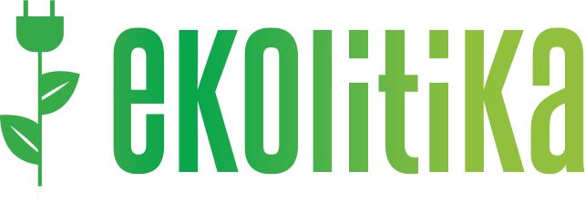

Story Starter Cards
Draw a card. Spark a story. Share your moment.
Why Story Starter Cards?
In a world of endless digital noise, we often forget the power of authentic, circular storytelling. Story Starter Cards are designed to help you reconnect with the stories that matter—stories rooted in sustainability, community, and the wisdom of nature.
What Makes This Different?
These aren't just prompts—they're bridges. Each card is carefully crafted to connect personal experiences with sustainable living, inspired by EKOLITIKA's philosophy: learning from nature to create a more sustainable future in every aspect of our lives.
The EKOLITIKA Approach
Sustainable storytelling means creating narratives that come full circle—stories that teach, inspire, and perpetuate themselves through sharing. Just as nature operates in cycles, our stories should too. When you draw a card and share your story, you're not just answering a prompt—you're contributing to a growing ecosystem of wisdom.
- Circular process: Every story shared inspires another story
- Rooted in nature: Prompts connect you to sustainable thinking
- Community-driven: Built from Erasmus+ storytelling projects
- Accessible storytelling: Everyone has a story worth sharing
How It Works
Draw a card. Reflect on the prompt. Share your story with your community, on social media, or in your journal. Each card invites you to think about sustainability not just as environmental action, but as a holistic way of living—sustainable relationships, sustainable habits, sustainable futures.
This platform was born from youth work, storytelling workshops, and countless conversations about how we can use stories to create positive change. It's free, open, and designed to be shared.